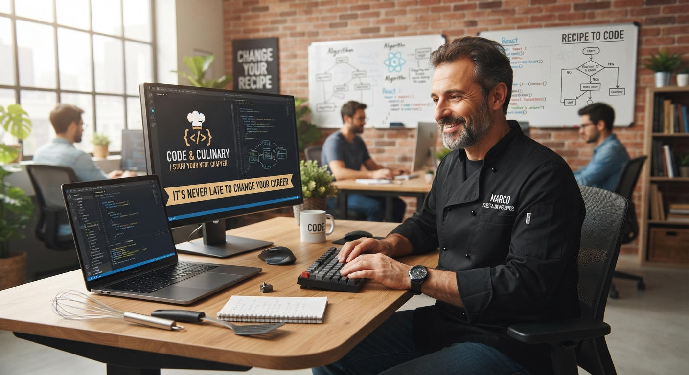
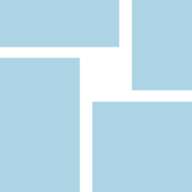

01
Professionel træning
Maks 10 spillere pr. træner. Alle med børneattest.
02
Stærkt fællesskab
Faste hold, klubaftener og LAN gennem hele sæsonen.
03
Konkurrence performance
Turneringer på niveau og vejen mod Linx Legacy
04
Trivsel og sundhed
Søvn, kost og bevægelse er en del af pensum.
om uddanelsen
next - en ny begynelse
kompetencerne til at udvikle moderne hjemmesider og digitale løsninger. Gennem undervisning og praktiske projekter lærer du at arbejde med HTML, CSS, JavaScript

og andre teknologier inden for webudvikling. Webudvikler uddannelsen på NEXT i København giver dig Du får erfaring med både frontend, backend, design og programmering. Uddannelsen giver mulighed for at skifte karriere og opbygge nye kompetencer – også hvis du kommer fra en helt anden branche.
faktabox
- Mulighed for SU under uddannelsen, når betingelserne er opfyldt.
- 2 år og 3 måneder
- Uddannelsen er opdelt i to dele og afsluttes med praktik.
- Afhænger af adgangskrav og optagelsesbetingelser.
